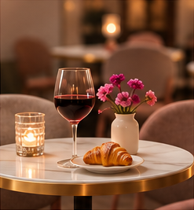

Viinibaari ja
fikakahvila
Helsingissä
Ruotsalaista fikaa, rapeita voisarvia ja huolella valittuja viinejä.

Pietarinkadulla
Tule peremmälle
Tunnistat meidät kolmesta punaisena hohtavasta sanasta. Avaa puuovi ja tule kahville. Kaadamme kahvin kukkakuppiin, ja marmoripöydälle mahtuvat niin voisarvet kuin viinilasitkin. Mitä ystävällesi kuuluu?

Menulla
Kahvia, muruja
ja lasi viiniä
Voisarvesta jää lautaselle muutama muru. Sen seuraksi sopii cappuccino. Jos jäät viinille, kysy meiltä, mitä tänään kaadetaan laseihin.
Katso menu
Tapahtumat
Ilta viinin
äärellä
Mitä näistä viineistä ottaisit toisenkin lasillisen? Siitä syntyy usein illan paras keskustelu. Tule viininmaistajaisiin tai kysy omalle porukallesi sopivasta illasta.
Tulevat illatTule käymään
Pietarinkatu 16 A
Helsinki
- Ma–to
- 8.00–22.00
- Pe–la
- 8.00–23.00
- Su
- 9.00–20.00